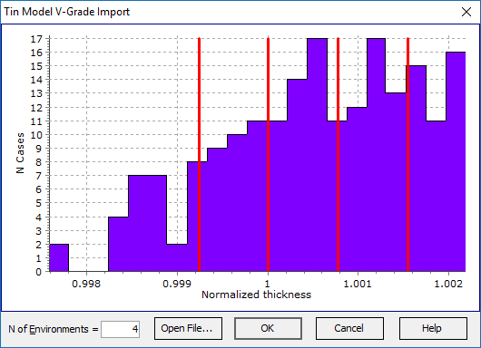

Import Tin Model V-Grade
Import Tin Model V-Grade
This feature within the OptiLayer software enables users to read normalized thickness data from Tin Model V-Grade software output files with the extension .exp. The .exp files generated by Tin Model V-Grade contain specific data related to normalized thickness calculations. Users can leverage this option in OptiLayer to import the normalized thickness data from Tin Model V-Grade output files, providing a seamless integration between the two software platforms. For more detailed information about the Tin Model V-Grade software and its capabilities, users can refer to the official website at http://www.tinmodel.com.

In the OptiLayer software, the distribution of normalized thicknesses is visualized as a histogram, and proposed taper coefficients are depicted as thick red vertical lines within the graphical interface. When users modify the number of environments, OptiLayer automatically recalculates the taper coefficients based on the updated settings and displays them accordingly. This dynamic adjustment ensures that the proposed taper coefficients align with the user-defined specifications. By clicking the “Open File…” button, users can load another Tin Model V-Grade file, providing flexibility in working with multiple sets of normalized thickness data. Upon selecting the OK button, OptiLayer adjusts the number of environments accordingly and inserts the proposed taper coefficients into the corresponding environments. Users can then access the Environments Manager to review and verify the new configuration, ensuring that the system is set up accurately for further design analysis and optimization.